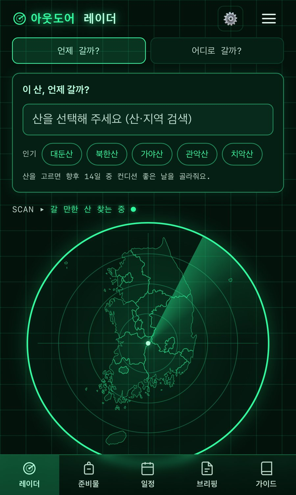
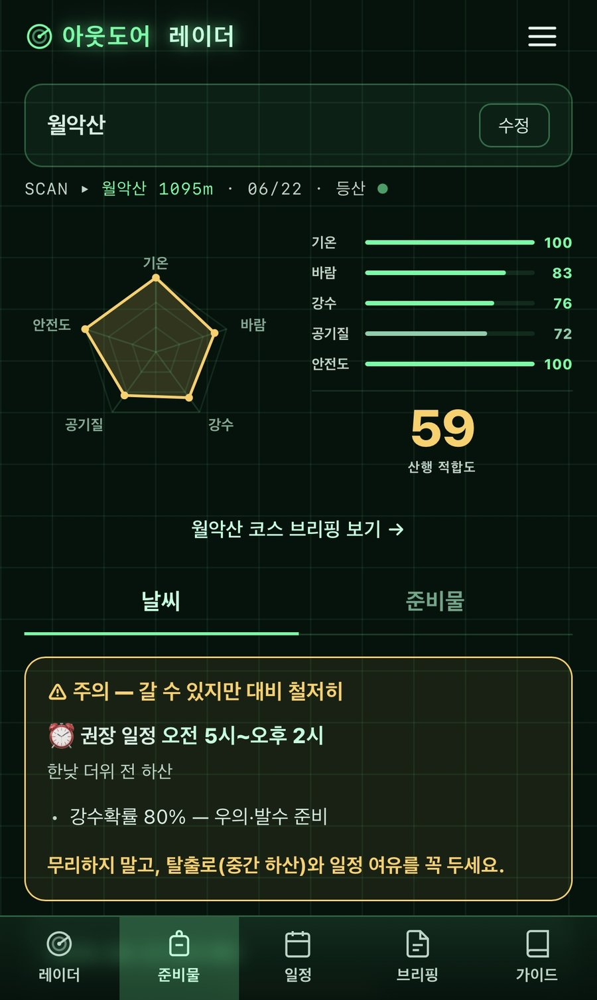
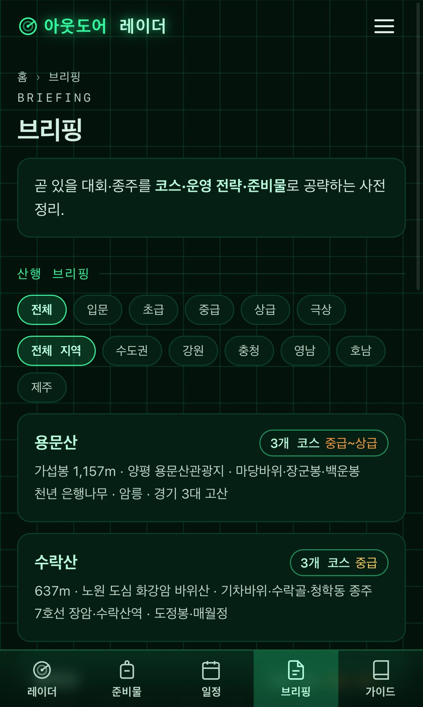
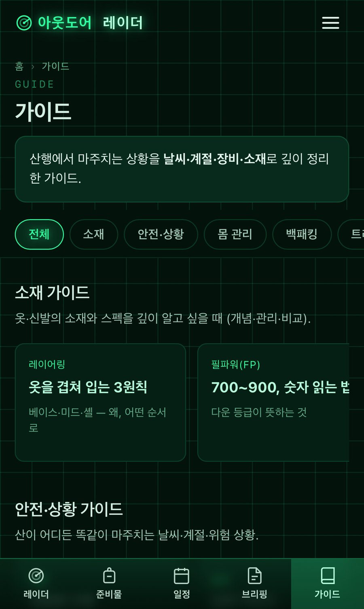

// OVERVIEW
취미인 아웃도어 활동에 필요한 정보 — 기상, 준비물, 일정, 코스, 전략 — 를 AI로 정리한 서비스 '아웃도어 레이더'를 직접 기획·개발했습니다. 온라인에 산발된 정보를 콘셉트에 맞게 재구성하고, 레이더와 차트를 활용해 전체 비주얼과 정보 구조를 설계했습니다.
// 수행 업무
- 서비스 기획·개발 전 과정 단독 진행 (기획·개발 100%)
- 산발된 온라인 아웃도어 정보를 콘셉트에 맞게 정리·구조화
- 레이더·차트 기반 비주얼 아이덴티티 및 정보 디자인 기획
- AI 도구를 활용한 콘텐츠 생성·정리 워크플로 설계
// 화면



